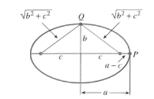
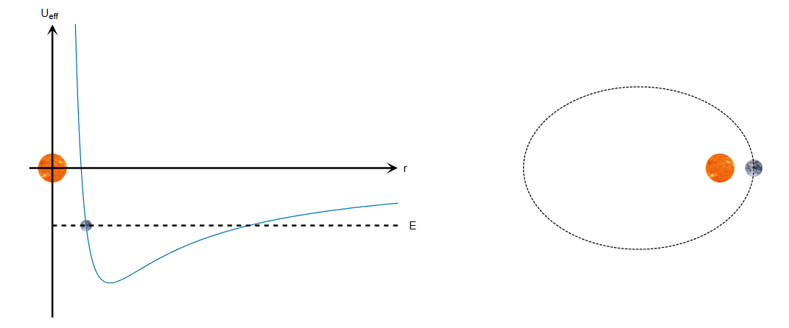

Newton's Law of Gravitation
Kepler shows, using his laws of planetary motion, how celestial bodies orbit around a more massive body, such as a star. These laws incorporate conic sections to show the different shapes that celestial bodies can take on their journeys around or past the Sun.
A good example of this is within our own solar system. The Earth’s orbit around the sun is an ellipse, shown below:

An ellipse is characterised by its closed, oval shape with two foci that follow the rule that the combined distance from each of the foci to a point on the ellipse must be greater than the distance between the two foci.

In the case of Earth, the Sun is one of the foci in its elliptical orbit. This is shown on the diagram above. The graph on the left shows the effective potential of the orbiting planet plotted again the distance r between the bodies. Effective potential is the combination of multiple potential energies, used to simplify some physics calculations. The effective potential here equals the sum of potential energy from gravity and potential energy from angular momentum.
The effect of angular momentum on the movement of the planetary body around the sun can be explained using Newton’s first law of motion, an object in motion stays in motion unless acted upon by an external force. There is a force acting on Earth here which prevents it from flying off into space. This force is gravity, which acts as a centripetal force in this case, keeping Earth moving along the elliptical path around the Sun. The gravitational force constantly accelerates Earth towards the sun. Earth's velocity and momentum is what causes it to stay in a stable orbit.
This velocity acts perpendicular to the direction of the gravitational force. It is large enough to move in a straight line as fast as the Sun can accelerate it so that the Earth will stay along the elliptical path that it does. This acceleration allows you to convert the variable linear momentum into a constant angular momentum.
The graph shows the effective potential as a function of r, the distance between the Earth and the Sun, one of the focal points of the Earth’s ellipse. As the distance increases, the effective potential will increase, due to GPE increasing. When it reaches the furthest point, or the turning point, the planet will rock back along the same path on the graph since r is decreasing.
The setup for deriving the conic sections from orbits of two bodies is as follows; we have a star like the Sun of mass M and a planet similar to Earth of mass m. They will both be modelled as particles for this derivation. The sun can go at the origin and Earth will be some distance r from the planet.
The sun will apply a force on Earth given by the equation:
\(F = \frac{-(GMm)}{(r^2)}\)
The force points from the planet to the sun, hence the negative sign on the equation. G is the gravitational constant. We will define k = GMm as that term will show up a lot within the derivation.
Newton’s third law states that for every force, there is an equal and opposite reaction force. Therefore, the sun must also experience the same gravitational pull from the Earth. However, the sun is much larger than the Earth, so it will not experience the same acceleration, shown in equation F = ma. For the Sun and Earth, M/m = 3*105 so the Sun is 300,000 times more massive. This makes any acceleration on the Sun negligible and it can be assumed to be at rest at the origin of the coordinate axes.
Let’s say at t = 0, the Earth has velocity \(\vec{v_0}\) and is at position \(\vec{r_0}\). We now need to calculate the path of the Earth when \(t > 0\). The vectors of velocity and position are going to start with z = 0. This will mean that the movement of the planet will stay within the xy plane, since there is no force or velocity causing it to move out of that plane. Doing this, we have simplified the derivation from a 3D problem to a 2D problem.
A mathematical solution to turning this from 3D to 2D would be to use the angular momentum vector \(\vec{L}\) given by the equation:
[L] = m[r] x [v]
The x stands for the cross product of two vectors, which returns a vector perpendicular to both input vectors. Under the current conditions, this would be along the z direction. The magnitude of this new vector is equal to [r] times the length of the component of [v] that is perpendicular to [r]. We will call this vr.
[r] * [v] = rmag * vr
So,
L = mrmag * vr
If both vectors are parallel, they will have no perpendicular component, meaning that their cross product is 0.
Angular momentum is very useful for calculations such as these as it is constant for the planet. This can be proven mathematically by differentiating [L] with respect to t (time) to find the rate of change of momentum.
(d[L])/dt = (d(m[r] x [v]))/dt
= (md/dt)([r] x [v])
As both [r] and [v] are functions of t here, you must apply the product rule.
= m([r] x (d[v])/(dt) + (d[r])/(dt) x [v]
= m[r] x [a] + m[v] x [v]
Finally giving,
(d[L])/dt = m[r] x [a] + m[v] x [v]
[v] x [v] are the same vector so they are parallel to each other, therefore there is no perpendicular component and the cross product is 0.
[F] = m[a] which means, as mass is constant, [F] ∝ [a]. Since both the force and displacement vectors will act directly from the planet to the star, they are also parallel and will have a cross product equal to 0.
Therefore,
(d[L])/dt = 0
Which means the rate of change of angular velocity is 0 and angular momentum is constant.
This shows that they stay in the xy plane because [L] = m[r] x [v]. [L] must stay pointed along the z axis as it is constant, so [r] and [v] must stay in the xy plane in order to both stay perpendicular to [L].
Next, we must find r(theta) as the function for the orbital path of the planet. To do this, we must use another constant, the energy. The total energy of the system is given by the equation:
E = K + U
Where E is total energy, K is kinetic energy, U is effective potential.
Using the equation Work done = Force * distance, you can show that differentiating work done (which is energy) with respect to r, you get force. Therefore, integrating force using r will give the potential energy of the planet, U. Shown mathematically:
F = (dU)/(dr)
F * dr = dU
U = F * r
Force can also be shown using F = -k/(r2) so you can sub that into the equation with U to get
U = -k/(r2) * r
U = -k/(r)
Where, again, k = GMm. Kinetic energy uses the equation
K = 0.5mv2
Where v is speed and m is the mass of the planet. The components of the speed in the xy plane have the velocity dx/dt for the x-axis and dy/dt for the y-axis. However, we can use dr/dt for the linear component and r*(dθ/dt) for the angular component.
Using this, we can define the kinetic energy of the planet as
K = 0.5m * (dr/dt)2 + 0.5m * r2 * (dθ/dt)2
Subbing both values into E = K + U
E = 0.5m * (dr/dt)2 + 0.5m * r2 * (dθ/dt)2 - k/r
And you can sub the value for the angular component into L = mrmag * vr in order to give
L = mr2 * (dθ/dt)
Since the component of the velocity vr is perpendicular to the radial direction, it is the angular component of that velocity. Hence vr = r*(dθ/dt). As L and m are constants in this equation, r2 ∝ 1/(dθ/dt) so when the distance from the origin increases, the angular velocity decreases.
Now, we may rearrange this equation to form
(dθ/dt) = L/mr2
Which gives the angular velocity as the subject. We can now sub this into our equation for energy to give
E = 0.5m * (dr/dt)2 + 0.5m * r2 * (L/mr2)2 - k/r
And it simplifies down to
E = 0.5m * (dr/dt)2 + L2/2mr2 - k/r
We now have E in terms of the radial coordinate, r. The equation E = Radial Kinetic Energy + Ueff(r) describes the total energy of a system that has centripetal forces. This equation looks similar to the one we have for energy above, Radial KE = 0.5m * (dr/dt)2. This means that the effective potential = L2/2mr2 - k/r. The effective potential can be used to show the general shape that a planet would take based on how much energy it has. However, this is not our final equation, as we want to find the function r(θ). We have two useful equations now:
A) dθ/dt = L2/2mr2
From angular momentum and another equation that we can rearrange from the energy equation to get
B) (dr/dt)2 = 2E/m - L/(mr)2 + 2k/rm
This equation is dependent on both r and t. We can remove the dependence on t by dividing equation B by equation A2. This gives
(dr/dt)2/(dθ/dt)2 = (2E/m - L/(mr)2 + 2k/rm)/(L2/2mr2)2
(dr/dθ)2(L2/2mr2)2 = (2E/m - L/(mr)2 + 2k/rm)
The powers of r always appear in the denominator, so we may have an easier time solving for u ∝ 1/r, where
u = L2/km * 1/r
du/dr = L2/km * 1/r2
du = L2/km * 1/r2 * dr
Which implies,
dr = -L2/km * 1/u2 * du
dr/du = -L2/km * 1/u2
We can also say that:
dr/dθ = dr/du * du/dθ = (L2/km * 1/u2) * du/dθ
Square both sides:
(dr/dθ)2 = ((L2/km * 1/u2) * du/dθ)2
(dr/dθ)2 = (L2/km)2 * 1/u4 * (du/dθ)2
Sub this into our equation from earlier, (dr/dθ)2(L2/2mr2)2 = (2E/m - L/(mr)2 + 2k/rm) to get
((L2/km)2 * 1/u4 * (du/dθ)2)(L2/2mr2)2 = (2E/m - L/(mr)2 + 2k/rm)
You can simplify this to get a much smaller equation
u’(θ)2 = -u2 + 2u + 2EL2/mk2
We want to find u(θ) so we can integrate this equation to find that. However, it will be much easier to take a second derivative of this equation, giving
2u’u’’ = -2u’u + 2u’
u’ cancels out on both sides to give a very simple equation for u,
2u’’ = -2u + 2
u’’ = 2 - u
This is very similar to a harmonic oscillator equation, ignoring the +1 shift. This is easily adapted into the normal sinusoidal solution of a harmonic oscillator, {epsilon}cos(θ), by just adding the shift of 1,
u(θ) = {epsilon}cos(θ) + 1
{epsilon} here is an integration constant from solving using the second derivative. It is related to the energy and angular momentum. If we plug the above equation back into our u’(θ)2 equation, we get:
u’(θ)2 = (2EL2)/mk2 -({epsilon}cos(θ) + 1)({epsilon}cos(θ) - 1)
When solved for {epsilon},
{epsilon} = sqrt(1+(2EL2)/mk2)
We can now put our equation for u(θ) back into the equation r = L2/km * 1/u in order to get:
r(θ) = L2/km * 1/{epsilon}cos(θ) + 1
Now, we have the function r(θ), which is the function that describes the shape of our orbit. It will return the shape of a conic section of eccentricity {epsilon}
Conic Sections - The Parabola
All the set of points in the plane that are equidistant from a fixed line and not on the line
Research links
- Calculus Textbook Link to textbook